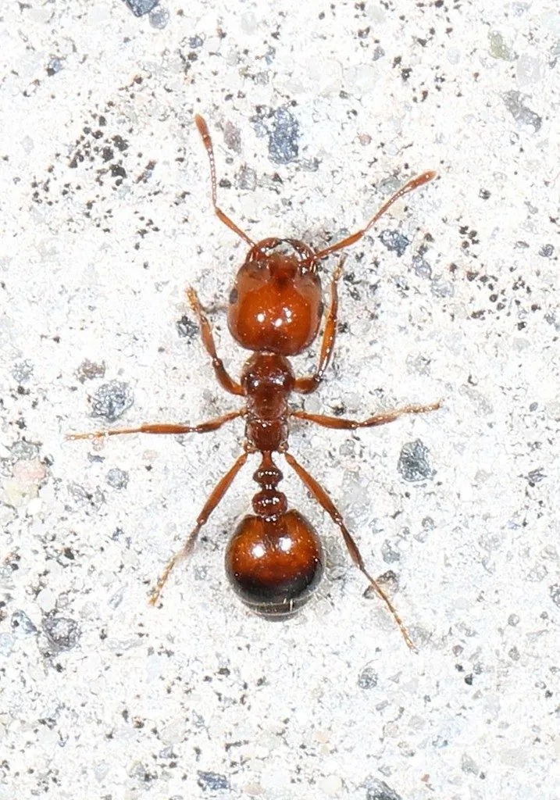

昆虫 · 动物界
红火蚁 Solenopsis invicta

原产南美洲的凶猛蚂蚁，工蚁尾刺蜇人剧痛，群体攻击性强，是国际公认的入侵物种，在中国造成严重生态损失。
- 分类
- 门节肢动物门纲昆虫纲目膜翅目科蚁科属火蚁属
- 栖息环境
- 温暖湿润的草地、荒地、农田与城镇绿地，筑丘状蚁巢
- 地理分布
- 原产南美，现扩散至美国、澳大利亚及中国南方等地
- 保护级别
- 暂无评估；被列入中国外来入侵物种名单
物种志
红火蚁工蚁体长约 2–6 mm，体红褐色，腹部颜色较深，同巢个体大小差异明显，可分为小型工蚁和大型工蚁。蚁巢在草地上隆起成松软的土丘，无明显出入口，受惊时成百上千只工蚁会迅速涌出，用尾刺连续蜇刺入侵者。
红火蚁食性庞杂，捕食昆虫、蚯蚓、小型脊椎动物，也取食种子、蜜露和腐肉，常攻击雏鸟、蜥蜴等地面活动的小动物。成熟蚁巢可容纳数十万只工蚁，蚁后日产卵可达约 800–1000 枚，多蚁后型巢群密度更高。它原产南美巴拉那河流域，随苗木、草皮和货物运输扩散到美国、澳大利亚、中国南方等地，2004 年在中国广东首次确认，已被列入中国外来入侵物种名单。防治需检疫封锁、毒饵诱杀和蚁巢处理相结合。
形态与习性
- 食性杂食，捕食昆虫和小型脊椎动物，也取食种子与蜜露
- 体长工蚁约 2–6 mm，蚁后约 8 mm
- 繁殖蚁后日产卵可达约 800–1000 枚，单巢可含数十万只
- 原产地南美洲巴拉那河流域
- 危害蜇刺引起红肿过敏甚至休克，破坏农田生态与电力设施
- 防治检疫封锁结合毒饵诱杀与蚁巢物理处理
趣味知识
- 红火蚁的名字来自被蜇后的灼烧感，脓疱愈合后可能留下疤痕。
- 一个成熟蚁巢可容纳数十万只工蚁，多蚁后型巢群密度更高。
- 红火蚁随苗木、草皮和货物运输远距离扩散，是检疫重点对象。